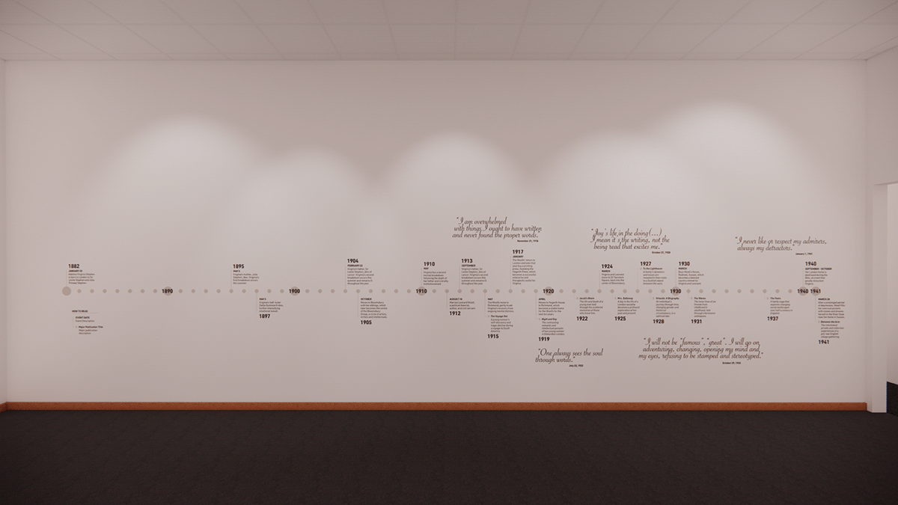
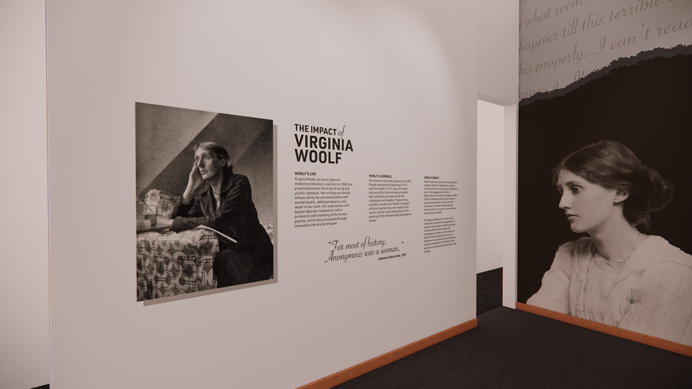

In Her Own Words
This project was completed as my capstone project for my master's in data analytics and visualization at the Maryland Institute College of Art. This immersive museum exhibition unfolds the intricate tapestry of Virginia Woolf's life and thoughts, as revealed through her personal journals. By transcribing and analyzing Woolf’s handwritten entries, this project not only brings her narrative to life but also redefines the way we interact with literary history.

Museums and Open Access
Museums historically have been a place for the privileged – a place for the affluent to access private collections. In recent decades, we have seen museums shift their focus to be hubs of inclusion; community centers for learning, exploration and cultural exchange.
Museums have focused their efforts to be more accessible. Whether it be offering their exhibits online, opening them to a wider audience, providing free admission days to remove financial barriers, or making building modifications, improving physical accessibility. I believe in the next few decades, we are going to see this trend continue, but also see museums and institutions become more proactive, seeking out collections and providing them to the general public for the sake of accessibility.
I believe in open access and wanted to contribute in a way which felt appropriate and needed.
The Journals of Virginia Woolf
Virginia Woolf kept personal journals throughout her entire life, but the bulk of them came in the last 26 years before her untimely death, where she discussed literary work, feminism, mental health, familial relationships, society and other authors and artists. The journals themselves amounted to 1,616 total entries written within 30 journals spanning 26 years. They exist primarily as republished, condensed volumes in print and up until this project, no digital version existed aside from a few ebooks. Even with these limited means of access, the published versions are filled with editor notes and remarks, taking away from the purity of Woolf’s journaling.
I went through the process of hand-typing all 1,616 entries and inputting them into a complete, accessible collection within a spreadsheet.
Each entry now includes a unique identification number, a date, the text of the entry itself – rid of editor annotations – the word count, and which one, or several recurring themes appeared in the entry. These six main themes being literary work, women & feminism, mental health, friends & family, society and artists & authors. This data set now exists as a resource for fellow data visualization artists to try their hand at this project, but also for researchers whom of which, up until I publish this, have not been able to conveniently dissect this data. Even if they had the books, physically or digitally, they were not formatted to be an easy collection to explore. Now, they can.
The Selection of Space
For the purposes of this theoretical exhibit, I used the Scheller Gallery in the Allentown Art Museum. The Allentown Art Museum is based in the Lehigh Valley of Pennsylvania, where of which has several museums and research universities. I chose this museum because how clear of an importance accessibility has been for them. They operate on a no-cost entry, removing a financial barrier, they are a physically accessible site, and have initiatives like Sensory Saturday where the museum creates a low sensory experience for those who may benefit, like those who are neurodivergent.
The space itself has six doors, creating six different ways a visitor could enter or exit the space. Taking this into consideration, I’ve laid the space out in a nonlinear experience. Anyone could enter at any point and begin to take in information. Each section adds on to the next, but doesn’t require a single start or stop section. Throughout the exhibit, visitors will find static and interactive elements to better engage them with the material.
A - a timeline of Woolf's life, including important life events and integral publications.
B - an inkblot data visualization showcasing the six main themes Woolf wrote about in her journals.
C - a summary of Woolf's life, her work and the impact she has left on society.
D - a photo collage of Woolf throughout her life, adding more design to the space.
E - a visualization details where Woolf wrote her journals
F - a quote from Woolf in large lettering, talking of her thoughts on journaling.
G - interactive desks featuring a web graph tool, allowing visitors to fully explore Woolf's journals.
H - a kids table featuring a "how to journal" booklet and coloring pages

Chronicles of a Literary Life
Woolf's life was filled with ups and downs, ranging from losing numerous family members and being institutionalized more than once, to publishing world-renowned publications and cofounding with Bloomsbury Group. To provide a brief overview of her life, this timeline aims to encapsulate those key moments which primarily contributed to making her who she was, in addition to her key publications.
Visually, the timeline is broken down by bubble. Each small bubble represents a single year while large bubbles signify a decade marker. If an important event or publication took place, it is stemmed out and the year is labeled either above or below the content, depending on it's orientation to the center line. In addition to year, the month and specific date is provided for additional context, before given the description of the event, or synopsis of the publication. To add visual contrast, quotes from periodic years are printed largely above and below the center timeline.
This timeline paints a picture of what made Woolf who she was. It showed the lighter and darker points in her life. It’s also a place people can return to after visiting other sections of the exhibit, filling in additional context, piecing more of the puzzle together, discovering Woolf along the way.
As with every section of the exhibit, the text size and location on the wall is optimized for ADA guidelines, allowing those in wheelchairs, or those of short stature, to still have full visible range of all text and objects printed on the wall.
The Tapestry of Thought
Woolf spoke of six primary themes throughout her journaling – literary work, women & feminism, mental health, friends & family, society, and artists & authors. To visualize these themes and how often they were written about, a year-by-year breakdown is visualized, showcasing the frequency of each theme through ink blots. Woolf, using a fountain pen as her primary writing tool, allows for the ink blot to visually represent her thoughts on subjects.
The year is notes at the base of each chart, along with the total number of entries written in that given year. Each segment corresponds to a theme, the ink blot's bleed indicates the mention frequency – more spread signifies more references. This was designed to have visitors stand and slowly make their way through the piece, looking at each ink blot and finding something new about what was written and how often. It's here we begin to really visualize what was important to Woolf, and when she was more fixated on specific topics. We see her write more about mental health and friends & family in times of greater sorrow; we see talk of society while the world, including her, experienced WWII. We're also about to see when self-reflection was of greater importance, or less so, based on how much ink was spilled. Even without the inclusion of words themselves, we can feel through visual interpretation what Woolf was experiencing, both in the world around her and within herself.
Her Journals and Their Echo
Some people don’t want to simply look at visualizations, but read snippets and be given the information, rather than understanding it through visual languages. This wall provides a text-heavy summary of Woolf’s life, her journals and the impact both had on society. I’ve included a portrait photo of her and a quote I believe represents a bit about what she stood for. This exhibit continues to be an experience for those who can pick and choose how much they would like to absorb. Those who want to read a timeline or stare at inkblots can do so to receive as much information those charts provide. For those who enjoy the text-heavy sections of exhibits can do so here.
Portraits of Woolf
Along this wall, portraits of her span throughout her life in darker tones. This adds visual appeal to those walking by, and those exploring the space. As you move from left to right, you see her age, and see her face shift, staring from one wall to the other. Situated above her is a torn piece of paper. On it is her final letter ever written - a suicide note to her husband. In these words, which loom over her and the exhibit, are her truly uncensored beliefs of herself and the world, providing guests with a bit of an Easter Egg, but also a final sentiment and message about who Virginia was in her final hours.
Mapping the Manuscripts
Woolf's journals are the center and primary exploration in this exhibit – it was important to highlight not just their content, but the physical attributions, as well. This visualization is meant to showcase the different journals individually and how they're connected. Each of the 30 journals are laid out along the wall in their to-scale size, giving visitors an idea of the actual size of journals Woolf wrote in. The month and year the journals were written in labeled below each one. Stemming from the journal is a line which represents the number of entries within, distinguished into thin, normal and thick widths. At the other end of the line is a bubble which represents the city of the journal which it was written in, with the size of the bubble representing how many entries were written in that given location. These create another visualization, similar to the ink blots, for visitors to stand and observe the design for a few minutes, dissecting what it’s communicating.
In Her Own Words
This exhibit is all about Woolf's journals and her thoughts written in her own words. I could not think of a better way to catch someone's eye and bring the overall theme back than with a quote from Woolf herself. This quote encompasses why she journals and brings it right and center. It is an overarching sentiment which is meant to both resonate with guests, but also provide a bit more context as to why behind this all.
Engaging Young Minds
Museums should be a place for families, even if children are not the primary audience. While Woolf’s journals touch of adult subjects such as mental health and world politics, this does not mean children should be excluded from engaging with the content in different ways. To engage these young minds, I created a kids table to go in the exhibit space. The kids table is modular, it has both a workbook for middle schoolers on how to start journaling, complete with tips from Woolf, writing prompts, and info of Woolf’s journaling written in a tone more appealing to children. While they begin to write their first journal entry, they can look up at the wall next to them and be reminded of why Woolf wrote for herself - because it’s about imperfections and being vulnerable for your eye only.
For those younger than middle schoolers, there are a variety of coloring book pages, featuring photos of Woolf, journals and more. By including a space for children, we provide them a place for stimulus and engagement while their parents sit with them, or take a few steps away and experience the rest of the exhibit for themselves.
Exploring the Labyrinth
Looking at and getting a sense of Woolf’s journals are great, but for those who want a deeper dive into the journals in full, these interactive tables offer exactly that. Visitors are brought to an isolated desk, both immersing themselves with the tool while also feeling like Woolf herself, exploring the journals while sitting at a desk with nothing but their own thoughts and analysis. These created more than just a technological experience, but an environmental one.
Upon interaction with the touchscreen monitors, visitors are welcomed by an interface powered by Obsidian. At the center of this application is the web graph visualization, designed to depict a visual representation of Virginia Woolf’s life and literary milestones as chronicled in her journal entries. This feature allows users to navigate through Woolf’s experiences and reflections based on topic and sentiment, with filter options to search by year, decade or keyword. Consistent with the exhibit’s commitment to inclusive design, the application incorporates various accessibility features such as modifiable text size, voice-over narration and a switch to change between light and dark mode. To aid in the navigation of this tool, instructions and guides are provided above the screen.
When visitors begin their interactive table session, they are greeted with the full web graph view. The web graph takes up the vast majority of the page, but also includes a year-by-year organization panel on the left-hand side. When visitors long-hold on one of the green category dots, they will see each journal entry which connects to it. The closer to the category node is to the journal node, the more prominent that category appears in that entry. When journal nodes are clicked randomly, or chosen by selecting a specific date, a new view opens. The date-by-date column remains on the left-hand side. The journal entry appears in the center and how that journal entry is represented in the original web graph now appears on the right-hand side.
Different visitors will use this differently. Your casual visitor will most likely just read a random entry, or click around in the web graph for fun. However, this can be used as a powerful research tool. The search feature allows visitors to search specifically by keyword or category. For example, visitors may choose to search “Churchill”, as Winston Churchill was a prominent world leader during Woolf’s life, and she wrote of him occasionally. By searching Churchill, each entry mentioning him replaces the year-by-year panel, and now highlights each one of his mentionings. This tool in itself is modular. It’s able to be used by a casual guest in the exhibit, but has the potential to be expanded and explored by researchers, as well.
Conclusion
This museum exhibition, a meticulously curated journey through the personal journals of Virginia Woolf, transcends the conventional boundaries of literary display. It offers more than a glimpse into Woolf’s world; it invites us into a deeply immersive experience that melds her introspective thoughts with the significant milestones of her life and career. Virginia Woolf, an emblematic figure of the high modernist era, renowned for her literary prowess and advocacy for women’s rights, becomes almost tangible to visitors through her writings.
By showcasing her journals, this exhibition not only highlights Woolf’s contributions to literature and feminism but also humanizes her, presenting her not just as a literary giant, but as a person grappling with the complexities of life, mental health, and societal norms. The unpolished cogitations within her journals, spanning from 1915 until her untimely death in 1941, offer a rare, unfiltered dive into the fluctuations of her mental health and the evolution of her creative genius.
Recognizing the gap in public access to Woolf’s complete journals, this exhibition not only fills this void but also democratizes the access to Woolf’s legacy. The painstaking process of digitizing each of the 1,616 journal entries is a monumental achievement, ensuring that Woolf’s insights are preserved for posterity and accessible to a global audience.
Thus, this exhibition stands as a groundbreaking endeavor, not just in literary scholarship but in societal impact. It is a vivid reminder of the transformative power of literature and its ability to connect us across time and space. Through Woolf’s journals, visitors are invited to explore not just the mind of a literary genius but also to reflect upon their own experiences and thoughts. It’s an invitation to understand the past, engage with the present, and inspire future generations.
In essence, this exhibition is a profound dialogue between Virginia Woolf and the world. It’s a conversation that spans decades, breaking down the barriers of time and space, allowing her voice to be heard, her ideas to be discussed, and her legacy to be celebrated. It’s an enduring tribute to Woolf’s belief in the power of words and thoughts, a celebration of her life, and a beacon of inspiration for those who believe in the transformative power of the human spirit.